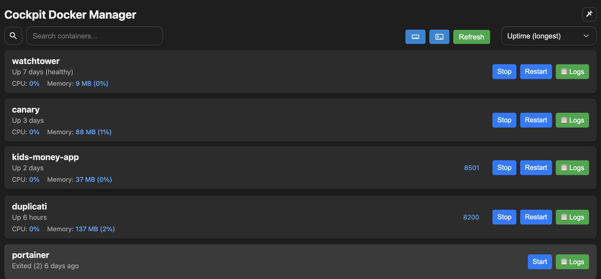

Docker Manager
A lite container manager for cockpit

×

A lite container manager for cockpit
The focus is the basics - with visibility being key.
Terminal is within reach for more complex activities.
Easily visible stats for quick situational awareness
All code is auditable.